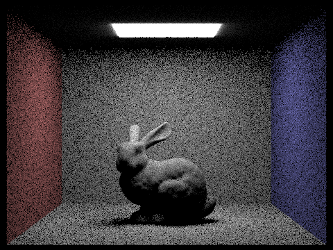
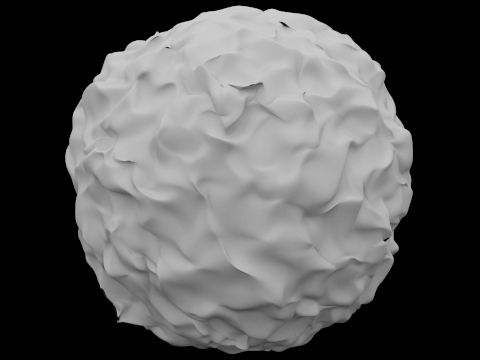

Overview
In this project, we learned how to implement the foundational components of rendering using rays, path tracing, scene intersections, bounding boxes, and sampling to render simple and complex images. We also learned how to accelerate the computation time and power needed to render these images by implementing methods of acceleration such as bounding volume hierarchies and adaptive sampling. Finally, we learned how to increase the realism within our images by implementing direct and global illuminations within our rendering pipeline.
Part 1: Ray Generation and Intersection
To generate a ray, we must first convert our coordinates from image space to camera space. This is done by first translating the image
coordinates to center around the origin and then scaling them up by the dimensions of our camera space. Then, we create a new ray object,
initializing the camera’s world position as the origin and our calculated camera space coordinates as the direction. We then normalize the ray
and assign its min_t and max_t values to the near and far clipping planes respectively.
Given a ray and an intersection object, we calculate whether the ray intersects the object by calculating its t-values using formulas introduced
in lecture. We then compare our computed t-value(s) to the ray’s min_t and max_t to determine whether there was a valid intersection. If our
computed t-value(s) are within this range, we update the intersection object’s parameters and return true.
For triangle intersections, we used the Moller Trumbore Algorithm, which uses a series of cross and dot products between the ray’s components
and the triangle’s edges to quickly compute a triangle-ray intersection in 3 dimensions. The algorithm returns a vector consisting of our computed
t-value, as well as two barycentric coordinates that we later use to compute the normal vector at the intersection.
Below are some examples of normal shading on some small .dae files.
|
|
|
Part 2: Bounding Volume Hierarchy
Our BVH algorithm first adds all the given primitives to a bounding box, while also computing the min and max centroid among these primitives.
We then create a new bounding hierarchy volume node in our tree and return that node with all of the primitives in it, if the number of primitives
are within our max_leaf_size parameter. If not, then we order the rest of the primitives according to the longest dimension of our bounding box using
the min and max centroid we computed earlier. After reordering the primitives, we recursively assign our node’s left and right child, by passing in
the first half of the list to the left node, and the second half of the list to the right node. The algorithm continues this process until all of our
initial primitives are divided into leaf nodes of the appropriate length.
The renderings below used our implementation of BVH.
|
|
|
|
|
Below are shows how long it took to render these images using the starter code vs using our implementation of BVH. Luckily Amy has an expensive computer, so rendering the large .dae files with the starter code did not take too long.
|
|
|

|
As you can see from the results above, when rendering the cow.dae file using the same parameters, the rendering times without bvh acceleration was 11.39 seconds while with bvh acceleration was 0.05 seconds. This means that with our implementation of bvh acceleration, our rendering times were over 200 times faster! This makes sense as our ray is checking for fewer intersections, since our construction of the bvh tree divides all the primitives within the scene into their own bounding boxes. Due to this organization, the ray can ignore all the primitives in which it does not intersect the bounding box they are contained in. We can also observe this occurrence in more complex renderings such as Lucy and max_plank. Rendering Lucy without bvh acceleration resulted in a rendering time of about 227.84 seconds vs 0.03 seconds, and our rendering for max_planck was 119.07 seconds vs 0.06 seconds. This shows that even if we’re rendering geometrically complex scenes, our time complexity grows logarithmically!
Part3: Direct Illumination
To perform direct lighting with uniform hemisphere sampling, we perform a Monte Carlo estimation with uniformed samples on the hemisphere.
To do this, we first iterate through the desired number of samples and call hemisphereSampler->get_sample(). This function returns a random
object-space vector, which we set as our ray’s direction by converting it to world space. We then initialize the other components of our ray,
with the origin being our hit point of interest, min_t being a very small number EPS_F, and our max_t being INF_F. Afterwards, we check the bvh
of our intersect function to see if the ray intersects another object within our scene. If this is the case, then we add the approximate
reflectance at that point using our Monte Carlo formula and the bsdf at the point of intersection. Finally, we scale and then normalize our
computed reflectance by the number of samples we took and return our result.
The process of computing direct lighting by importance sampling lights is similar to uniform hemisphere sampling, only this time we sample from
the lights in our scene directly to reduce noise in our rendering. First we iterate through every light on our scene. To decrease computation
time, we check to see if our light source is a delta light. If this is the case, we will only sample from it once because all samples would
result in the same value. Otherwise, we sample from the light a total of ns_area_light times.
Within our actual sampling, we first check to see if the light is behind the surface at our sampled hit_point by checking its z-value. If so,
we skip this sample and move on to the next. Otherwise, we initialize our ray values as usual, only this time we set ray.max_t to the distance
to the light - EPS_F since we only care about intersections before the light. We then check to see if an intersection occurs within our given
t-range, which would indicate that a shadow occurs at our point of interest. If this isn’t true, then we compute our L_out parameter as usual
using Monte Carlo, and then normalize the value at the end by dividing by our number of samples.
|

|
|
|
|
|
|
|
|
It is clear from the images above that the results of hemisphere sampling are much noisier than what we rendered from importance sampling. The walls are littered with black dots, and the overall brightness of the image is toned down. In contrast, the images rendered with importance sampling are much smoother, have better clarity, and output a level of brightness we would expect from this scene. The reason for this stark contrast is in our method of sampling. In hemisphere sampling, not all of our sampled rays would hit the light source. Some would hit the walls, the bunny, or not hit anything at all. This is what results in the noise that we see above. Importance sampling accounts for this noise by only sampling rays from the light source itself, allowing for a better, more accurate image.
Part 4: Global Illumination
Our indirect lighting function in at_least_one_bounce_radiance first assigns our continuation probability based on what the current depth of
our ray is. If our ray depth is the maximum, this indicates that this is the first iteration of our function, which means that we should add
the current light emittance to our calculation of L_out. Otherwise, we set our continuation probability to be 0.65, which was derived by taking
the complement of our termination probability, which we set to 0.35.
After determining the continuation probability, we sample from our isect’s bsdf by calling sample_f and initialize our ray components like in
previous parts. This time, however, we also initialize our ray.depth to r.depth - 1, as every recursive call to the function should result in
1 fewer ray bounce. Finally, we check to see if there is an intersection with our bvh, and if there is, determine whether we should terminate
our calculations based off of our ray’s depth and a coinflip of our continuation probability. If this returns true, we continue our recursion
by passing in our sampled ray and its intersection into at_least_one_bounce_radiance. If not, then we return our computation of L_out.
Below are some images rendered with global illumination. The parameters used for the 4 images below are 1024 samples per pixel, 4 samples per area light, and a max ray depth of 10.
|
|
|
|

|
|
Below are two images rendered with only direct illumination, and only indirect illumination.
|
|
|
|
|
|
Below is the CBbunny.dae rendered with different max ray depths. All the images were rendered with 1024 samples per pixel, and 4 samples per area light.
|
|
|

|
|
|
|
With a max_ray_depth of 0, this is essentially the zero bounce case where the only light is coming from the light source itself. With a max_ray depth of 1, we can see that our rendering of the bunny has very dark shadows. This is because we are only sampling rays that come into contact with the light source itself. Increasing our max_ray depth by 1 results in a stark difference, where rays are not only sampled from the light, but are also from the bounces of those rays as well. As we continue to increase the maximum ray depth, the shadows continue to become softer as more rays are contributing to the illuminance of a single pixel, and we reach a scene with very realistic lighting.
Below are different renderings of the dragon with a different number of samples per pixel.
|
|
|
|
|
|
|
|
|
|
|
As can be seen by the images above, the lower the s value, the more noise there is in our rendering. The more samples we have, the smoother the image seems to be.
Our implementation of adaptive sampling extends from our raytrace_pixel function from Part 1.2 by adding a few more variables and calculations. We added two doubles, s1, and s2, that represent the accumulated illuminance and illuminance squared respectively for each of our sampled rays. Once we reach a certain number of samples defined by our samplesPerBatch parameter, we compute the mean and standard deviation of illuminance using s1 and s2. Once we have these values, we then determine whether the pixel’s convergence has reached a threshold defined by the maxTolerance multiplied by the mean. If this is the case, we exit out of our loop and divide by the number of samples we took. Otherwise, we continue to sample rays and check for convergence again at the next multiple of samplesPerBatch.
The dragon below is rendered with 2048 samples per pixel, 1 sample per light, and a max ray depth of 5.
|
|
|
As you can see from our render of the dragon above, there are varying sampling levels throughout our dragon_rate image, where blue indicates a low sampling level and red indicates a high sampling level. Notice how areas that are smooth and are more directly in the light of this scene tend to be on the lower side of sampling, such as the platform and the dragon’s upper body. On the other hand, components that have a more complex geometric structure and cast shadows such as the dragon’s mouth and lower body require higher sampling rates in order to mitigate the noise when sampling.
Collaboration
Our method of collaboration for this project was to discuss approaches to each of the tasks and then have each partner attempt to complete the same task using their own implementation. Afterwards, we would review both of our programs and address any bugs or conceptual misunderstandings we would have for the task. We would then stick with whoever’s implementation worked better (usually Amy’s) and worked together to debug any problems in their implementation that resulted in unexpected renderings.
website link: https://cal-cs184-student.github.io/sp22-project-webpages-amynattran/proj3-1/index.html